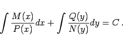
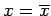
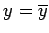
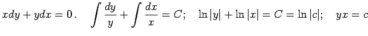

Inhalt Index DeskTop Bronstein

 Differentialgleichungen Gewöhnliche Differentialgleichungen Differentialgleichungen 1. Ordnung Wichtige Integrationsmethoden
Differentialgleichungen Gewöhnliche Differentialgleichungen Differentialgleichungen 1. Ordnung Wichtige Integrationsmethoden


Wenn eine Differentialgleichung auf die Form
|  | (9.7) |
Sollten für irgendwelche Werte  oder  die Funktionen P(x) oder N(y) Null werden, dann sind und ebenfalls Integrale der Differentialgleichung.
| Beispiel |
|
. |